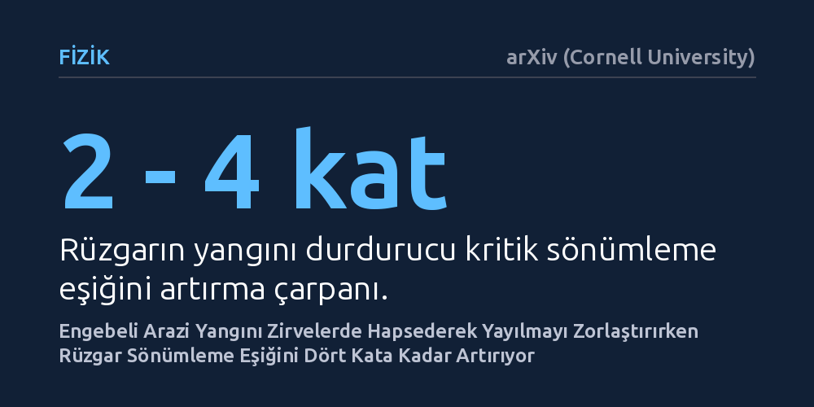

FIZIK · arXiv (Cornell University) · 2026-09-12
Araştırmacılar, engebeli arazi yapısı ve rüzgarın orman yangınlarının yayılma eşiklerini nasıl değiştirdiğini örgü tabanlı yeni bir istatistiksel fizik modeliyle simüle etti. Engebeli arazilerin yangını tepe noktalarında hapsederek yayılmayı baskıladığı, rüzgarın ise yangını sürdürme eşiğini iki ila dört kat artırdığı saptandı.
Orman yangınlarının engebeli arazide daima daha hızlı yayılacağı sezgisinin aksine, yokuş aşağı iniş zorluğunun yangını zirvelerde hapsederek durdurabildiğini gösteriyor.

Orman yangınları küresel ölçekte giderek daha yıkıcı hale gelirken, alevlerin karmaşık coğrafi koşullarda nasıl ilerlediğini öngörmek hayati bir ihtiyaç oluşturuyor. Düz alanlarda yangın yayılımı görece basit modellerle açıklanabilse de dağlık ve dalgalı arazilerde yerel eğimler ve yönlü rüzgarlar yangının seyrini tahmin edilemez kılmaktadır. İstatistiksel fizikte yangın yayılımı uzun süredir bağlantı olasılıklarını inceleyen sızma modelleriyle ele alınsa da mevcut yaklaşımlar arazinin yükseklik dağılımını ve rüzgarla olan rekabetini yeterince açıklayamıyordu.
Yamaç yukarı ilerleyen alevlerin hızlandığı, yokuş aşağı inerken ise yavaşladığı bilinir. Ancak arazideki bu yerel eğim asimetrisinin geniş ölçekte yangını tamamen durduran kritik eşiği nasıl değiştirdiği sorusu yanıtsız kalmıştı. Bu çalışma, engebeli bir arazi yapısı ile rüzgar faktörünün bir araya geldiğinde yangının yayılma dinamiğini ve sönme eşiklerini nasıl dönüştürdüğünü araştırmaktadır.
Araştırmacılar bu etkileşimi çözümlemek amacıyla "Arazi Ağırlıklı Orman Yangını Modeli" (TFFM) adını verdikleri yeni bir örgü simülasyonu kurguladı. Modelde yangın, rastgele Gauss yükseklik alanına sahip iki boyutlu bir arazi yüzeyinde ilerlemektedir. İki ağaç arasındaki yangın sıçrama olasılığı yükseklik farkına bağlı asimetrik bir fonksiyonla belirlenirken, modele rüzgar yönünde yangını sürükleyen ek bir itici faktör dahil edilmiştir.
Ekip, kenar uzunluğu 8192 birime kadar ulaşan geniş kafesler üzerinde kapsamlı bilgisayar simülasyonları gerçekleştirdi. Sönümleme parametresinin farklı değerlerinde sonlu boyut ölçeklemesi uygulayarak yangın cephesinin yayılma hızını, korelasyon uzunluğu üslerini ve tek bir kıvılcımın hayatta kalma olasılığını ayrıntılı olarak hesapladı.
Simülasyon sonuçları, engebeli arazi yapısının yangının ilerlemesini kolaylaştırmak yerine baskıladığını ortaya koydu. Alevler yerel tepe noktalarına ulaştığında, yokuş aşağı geçiş olasılıkları düşük olduğu için yangın zirvelerde sıkışıp kalmaktadır. Hatta yüksek arazi pürüzlülüğü ve düşük ağaç yoğunluğunda yangın, dışarıdan hiçbir söndürme müdahalesi olmasa bile karşı uca ulaşamadan durmaktadır.
Rüzgar devreye girdiğinde ise yangını baskılayan kritik sönümleme eşiği 2 ila 4 kat yükselmekte ve yangının yayılması kolaylaşmaktadır. Zayıf rüzgarda dahi rüzgar yönünde belirgin bir yangın izi kayması görülürken, yüksek arazi engebesi ile güçlü rüzgar bir araya geldiğinde aralarında bir rekabet oluşmakta ve sınır geçişinde yanan alan oranı düşebilmektedir. Modelin ürettiği yangın izi desenleri, uydu gözlemlerinden elde edilen gerçek yangın izleriyle kayda değer bir uyum sergilemektedir.
Çalışmanın teorik fizik açısından en dikkat çekici bulgusu, modelin bilinen standart yönlü ya da izotropik sızma evrensellik sınıflarına uymamasıdır. Simülasyonlardan elde edilen korelasyon uzunluğu üssü (1,8) ve yangın cephesi hız üssü (0,34), literatürdeki mevcut yönlü veya yönsüz sızma modellerinin değerlerinden belirgin biçimde farklı çıkmıştır.
Bu durum, arazi engebesinin yarattığı uzamsal korelasyon ve tepe tuzaklarının yangın yayılımını yeni bir kritik davranış sınıfına taşıdığını göstermektedir. Elde edilen bulgular, yangın yönetimi ve risk modellemesinde sadece rüzgar hızı veya bitki örtüsünün değil, arazi topoğrafyasının yangını durdurucu ya da yönlendirici geometrisinin de hesaba katılması gerektiğini ortaya koymaktadır.